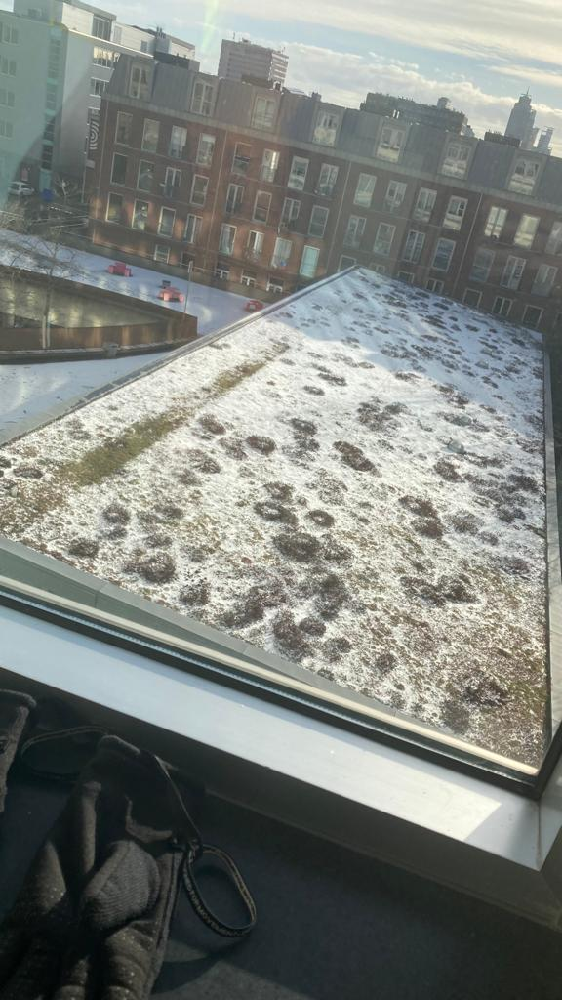

Amsterdam
Heel leuk die groene daken, maar wat vind je er nou daadwerkelijk van terug in Amsterdam? Het zal je verbazen hoeveel groene daken er zijn in Amsterdam. Zo zijn er zelfs groene daken op het HvA! Bijvoorbeeld bovenop de Studio Hogeschool van Amsterdam. Dit is goed te zien vanaf het binnen in het Theo Thijssenhuis en Kohnstammhuis. Dit is natuurlijk niet de enige plek, er zijn ontelbaar voorbeelden, dus ik zou zeggen ga er zelf op uit!
